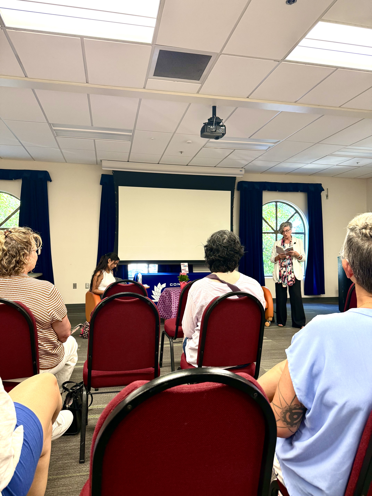
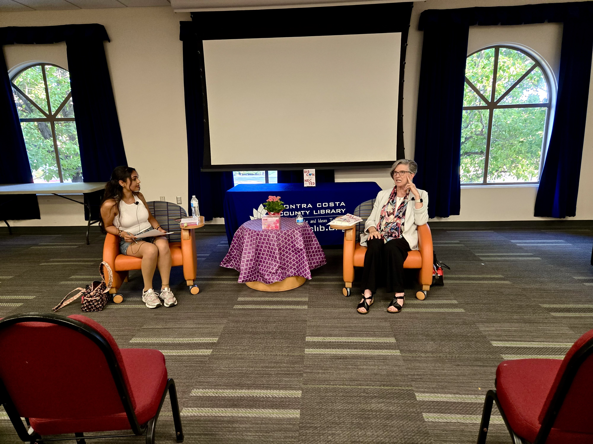

August 2026 Author Discussion – Disconnected, Eleanor Vincent

Tri-Valley Readers hosted a discussion with Eleanor Vincent, a Walnut Creek–based memoirist, in August 2026. Eleanor joined our club at the San Ramon Public Library to talk about her memoir, Disconnected, and the story behind it. Thank you to everyone who came out for this special evening! Read our review of the book in the Past Reads section of our Reading List.
